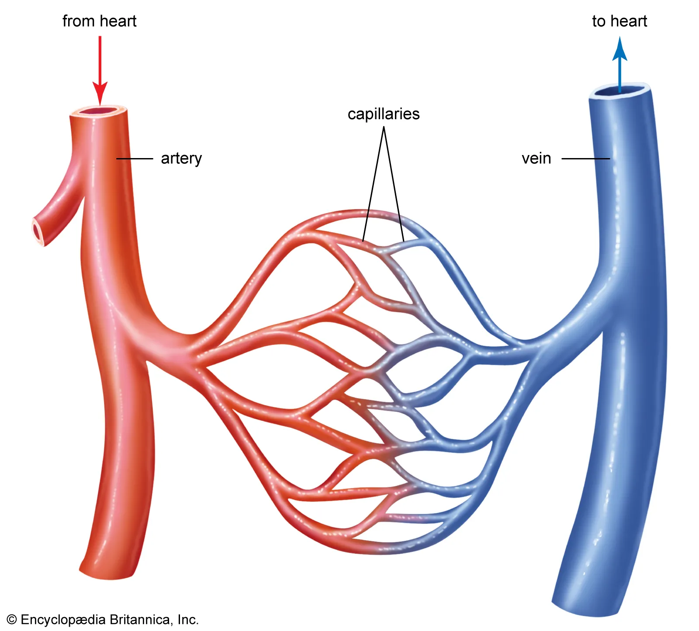
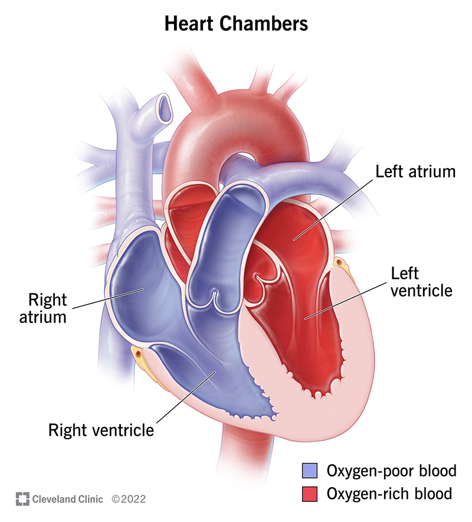
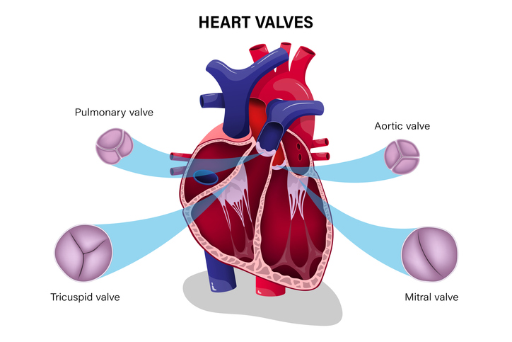

Circulatory system circulates nutrients, gases, and hormones throughout the body whilst removing waste.
Types of Circulatory Systems
-
Open Circulatory Systems:
- Typically found in invertebrates – common in arthropods (insects, crustaceans) and mollusks (clams, snails, oysters).
- Blood flows in cavities, not separated from interstitial fluid, so the fluid being circulated is called hemolymph.
- There are no vessels to conduct the blood – so it is less costly, but movement of nutrients is slower because it is challenging to generate blood pressure without vessels.
-
Closed Circulatory Systems:
- Found in vertebrates and annelids (worms).
- We have blood vessels to separate blood from interstitial fluid.
- Although this is more energetically demanding, it allows for more efficient movement because blood pressure is high.
Parts of the Circulatory System
The Heart
- The only organ in the body with cardiac muscle, which is striated, mononucleated, and has intercalated discs between cells in order to deliver electrical impulses to one another.
- Atria are the upper chambers of the heart that receive blood.
- Ventricles are the lower chambers of the heart that pump blood. Because they pump blood to the rest of the body, they have thicker walls – especially the left ventricle.

When looking at a diagram of the heart, note that the image is flipped – we always refer to the actual right side of the heart on the left side of the image.
Focus on identifying the atria and ventricles, and notice how the image has flipped the actual orientation of the chambers of the heart.
Blood Vessels
- Arteries:
- Carry blood away from the heart.
- They are more muscular and elastic than veins in order to both resist the pressure and bulge out from high velocity blood just pumped by the heart.
- Typically carry oxygenated blood, but note there are exceptions that we will go over.
- Blood pressure and velocity are the highest in arteries.
- Cross-sectional area is relatively low.
- Veins:
- Carry blood towards the heart.
- Generally thinner than arteries.
- Typically carry deoxygenated blood, but note there are exceptions that we will go over.
- Blood pressure is the lowest in veins.
- Cross-sectional area is relatively low.
- Veins have valves in order to propel blood even with low blood pressure.
- Capillaries:
- Smallest in individual size and cross-sectional area but accrue the largest overall cross-sectional area.
- Blood pressure is moderate, but cross-sectional area is the highest (taking into account total cross-sectional area of all capillaries in the body).

If we think about fluid-related physics, the continuity equation shows that:
A₁V₁ = A₂V₂
Assuming that A = cross-sectional area and V = velocities, they are inversely proportional – so increasing cross-sectional area decreases velocity and vice versa, explaining why capillaries exhibit the lowest velocity of blood flow.
Focus on identifying and understanding how blood pressure, velocity, and cross-sectional area fluctuate for each blood vessel.
Steps of Blood Flow
- Blood returns to the heart via the inferior and superior vena cava. The inferior vena cava, the largest vein in the body, brings deoxygenated blood back to the heart from the lower body (anything below the diaphragm). The superior vena cava brings deoxygenated blood back to the heart from the upper body (anything above the diaphragm).
- That deoxygenated blood is received by the right atrium (left on the image).
- The right atrium sends that blood to the right ventricle (left on the image) via the tricuspid valve – which prevents backflow of blood.
- The right ventricle pumps that blood through the pulmonary valve via the pulmonary artery (pulmonary because it is going to the lungs and artery NOT because it carries deoxygenated blood, but because it is carrying blood AWAY from the heart) to the lungs, where carbon dioxide is offloaded and oxygen gas is picked up by diffusion through the very thin walls of the alveoli.
- The now oxygenated blood returns to the heart via the pulmonary vein (pulmonary because it is coming back from the lungs and vein because it is returning to the heart, NOT because it carries oxygenated blood).
- The pulmonary vein gives blood to the left atrium (right on the image), which sends it down to the left ventricle (right on the image) via the bicuspid or mitral valve.
- The left ventricle pumps that now oxygenated blood through the aortic valve via the aorta, the largest artery in the body, to be distributed around the body via the systemic circuit.

*Please note that: The atrioventricular valves are those between atria and ventricles, namely the tricuspid and mitral valves, whilst the semilunar valves are after ventricles, namely the pulmonary and aortic valves.
Key Blood Vessel Exceptions to Note
- The renal arteries are major blood vessels that carry blood from the aorta to the kidneys.
- As recently discussed, pulmonary arteries and veins are commonly mistaken because pulmonary arteries actually carry deoxygenated blood and pulmonary veins carry oxygenated blood.
- Portal veins, namely hepatic portal veins and hypophyseal portal veins are common misconceptions because instead of carrying blood directly to or from the heart, they carry blood between organs:
- The hepatic portal vein carries nutrients from the epithelial lining of the small intestine to the liver to be processed before they are sent around the body.
- The hypophyseal portal vein allows hormones to be transported between the hypothalamus and the anterior pituitary, which is covered in more depth in the endocrine system.
Blood
- Blood is composed of plasma, red blood cells, white blood cells, and platelets.
- Red blood cells (erythrocytes): carry oxygen as they have hemoglobin, containing four subunits (each one has a heme group and each heme group binds one oxygen molecule). More hemoglobin levels means higher oxygen affinity. The heme group gives blood its characteristic red color.
- White blood cells (leukocytes): help fight infections (covered in-depth in the immune system).
- Platelets: help with blood clotting by gathering at the site of an opened blood vessel wall to create a barrier.
Embryology of the Circulatory System
- The cardiovascular (or circulatory) system is one of the first body systems to appear in an embryo.
- The major difference between the circulatory system of an embryo is that the aorta is connected to the pulmonary artery through a small blood vessel called Patent Ductus Arteriosus (PDA for short), that allows blood to bypass the lungs, since they are not functioning yet.
Written by Josephine Ankomah